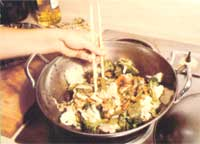
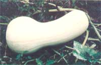

The life-bringing hand of spring has worked its magic in the garden . . . and carefully shaped beds now present a living mosaic of vibrant greens. Sample the first produce, and-in doing so-reclaim some of the energy you've put into your soil. Then spend healing hours among the rows... remembering that the gardener's footsteps are the world's best fertilizer.
GOOD THINGS IN SMALL PACKAGES
Now that the first flush of seed ordering, garden planning, and planting is pretty much over, many folks have undoubtedly had a few second thoughts about this year's garden. It seems that there are always varieties we want to try but somehow don't get around to ordering . . . plantings of saved seeds that don't germinate as well as we expected them to... and unused corners of the growing ground that could easily hold just a couple of plants.
Of course, it'd be wasteful to order a packet of 200 seeds when you really need only five or ten (especially if the seeds are of a type that doesn't "keep" well), so the last-minute "by chance" planting opportunities are often missed. Well, a trio of seed merchants must have thought that was a pity, because they've come up with a thrifty answer to the "feast or famine" problem: the compact packet.
Le Jardin du Gourmet (Dept. TMEN, West Danville, Vermont 05873), Pine-tree Seeds (Dept. TMEN, P.O. Box 1399, Portland, Maine 04104), and the Broom Seed Company (Dept. TMEN, P.O. Box 236, Rion, South Carolina 29132) are all offering small, inexpensive packages of seed that are just the ticket for late-season plantings.
The Green Mountain State firm has an across-the-board 20 cents price on its packets, and the Maine company charges 20 cents to 45 cents for its wares, while the southern firm has prices ranging from 20 cents to 50 cents (and even offers two "complete garden" packages that allow you to sow a 20' X 30' patch-complete with hybrid varieties-for a total cost of less than $5.00).
By the way, all three companies will send out their catalogs at no charge . . . and the Jardin du Gourmet listing also includes a rare and tasty offering in addition to its seeds: genuine Vermont maple syrup in all four grades (Fancy, A, B, and C).
STAFF PHOTOS
SOWAN ORIENTAL PLOT
If you'd like to take a wok in your garden and gather the makings for a fine Far East feast, there's another small seed company that you'll be happy to know about.
Sunrise Enterprises (Dept. TMEN, P.O. Box 10058, Elm-wood, Connecticut 06110) offers a wide variety of seeds for Chinese vegetables-some that are familiar and others that are not so well-known-including eight kinds of Chinese cabbage and eight other Oriental brassicas, edible burdock, and garland chrysanthemum.
And, to learn more about some of the less common varieties of Oriental vegetables, you can order an 18-page bulletin from the Suffolk County Cooperative Extension Association (Dept. TMEN, 246 Griffing Avenue, Riverhead, New York 11901 ... you'll need to enclose $2.00 for the pamphlet). In addition to pictures, descriptions, and cultural information on Chinese radishes, bitter melons, and other Far East fruits and vegetables, the thorough publication also provides a dandy seed-source listing.
GLEANINGS
Plans that will enable you to convert your wheelbarrow into an inexpensive fertilizer spreader are available, free, from the Department of Agriculture. According to its designers, the tool enables two people to apply six tons of fertilizer to 24 acres in just two days! You can request the plans by writing to Richard F. Dudley, Building 303, Beltsville Agricultural Research Center, Dept. TMEN, Agricultural Research Service, USDA, Beltsville, Maryland 20705 . . . enclose a self-addressed, stamped envelope, and let the folks there know that you appreciate their interest in equipment scaled to the needs of small family-operated farms.
The USDA has also recently been studying the biological control of greenhouse pests. Its researchers have discovered that the Insidious Flower Bug (now there's a name!) will gobble up 53 varieties of other insects and mites . . . and it's especially effective against thrips, two-spotted spider mites, and greenhouse white-flies. More observation is needed to determine whether our insidious ally can develop and reproduce in a greenhouse environment, but the agency has discovered two other insects that can do so, and are also effective in the fight against hothouse pests. A predatory mite, Phytoseiulus persimilis , reliably controls spider mites . . . and a parasitic wasp, Encarsin formosa , is effective against whiteflies.
The antique White Cushaw pumpkin is ideal for modern gardens.
OF HEIRLOOM QUALITY
Judging from the response we received when-a couple of years back-we printed an article on growing antique apple varieties (see MOTHER NO. 63, page 130), you folks have a great deal of interest in our gardening (and culinary) heritage. And with the concentration of ownership of seed companies in the hands of giant conglomerates, more people are beginning to be concerned about preserving the germ plasm that we'd need to breed new cultivars if disease should strike down some of our monoculture-planted crops (see this article for further discussion of this problem). Then, too, many gardeners are discovering that a goodly number of the old vegetable varieties were abandoned not because they didn't taste good-they were often superb-but simply because they weren't suited to the needs of mechanical agriculture.
Well, It turns out that Roger Kline, of the Vegetable Crops Department at Cornell University, has been researching America's heritage crops, and he's written (with the help of Robert F. Backer and Lynne Belluscio) a pamphlet called The Heirloom Vegetable Garden. The brochure describes the varieties you would have found growing in a typical mid-nineteenth century garden plot, including Warted Crookneck summer squash and Boston Marrow winter squash ... Black Mexican and Stowell's Evergreen sweet corn ... and Early Jersey Wakefield and Drumhead Savoy cabbage. You can obtain a copy of the pamphlet by sending $3.00 to the Distribution Center, Dept. TMEN, 7 Research Park, Cornell University, Ithaca, New York 14850. Ask for publication IB-177. And if you'd like to carry your research a little further, you can order seeds for 35 heirloom varieties, plus a sample garden layout, for $10 postpaid-or the seeds and the brochure for $12 postpaid-directly from Mr. Kline (Dept. TMEN, Vegetable Crops, Cornel! University, Ithaca, New York 14850). Other sources of heirloom vegetable seeds are those twin pillars of the California seed business: the Redwood City Seed Company (Dept. TMEN, P.O. Box 361, Redwood City, California 94064 . . . catalog 50 cents) and J.L. Hudson, Seedsman (Dept. TMEN, P.O. Box 1058, Redwood City, California 94064... catalog $1.00). Both firms offer seeds that represent our Indian heritage, too, including varieties grown for centuries by the Zapotecs of Mexico. Another good source of antique varieties-especially for northern gardeners-is Johnny's Selected Seeds, Dept. TMEN, Alb/on, Maine 04910. Good growing!
GARDENER’S BOOKSHELF
There's a fine crop of new garden books waiting to be picked for your spring and summer reading. The folks who just about invented the begonia (in this country, at least), Ed and Millie Thompson, have distilled their 25 years of experience into a definitive new work called Begonias: The Complete Reference Guide (it costs $35, from the Thompsons, Dept. TMEN, P.O. Drawer PP, Southampton, New York 11968). Now $35 is a considerable sum to spend for any book, and perhaps your local library will order the volume. But the guide is also just what its title claims-complete-and it's all but essential for anyone who's serious about growing begonias... so you might well want to start saving your pennies!
The good folks at Tilth , the nonprofit organization dedicated to furthering biological agriculture in the Northwest, have done much to be proud of... and now a new book can be added to their list of accomplishments. The Future Is Abundant: A Guide to Sustainable Agriculture ($11.9 plus $1.00 shipping and handling from Tilth, Dept. TMEN, 13217 Mattson Road, Arlington, Washington 98223) is edited by Larry Korn, who also edited Masanobu Fukuoka's The One-Straw Revolution (see MOTHER NO. 52, page 80). The work attempts to adapt the ideas of Fukuoka and Bill Mollison (author of Permaculture , and the subject of the Plowboy Interview in MOTHER NO. 66), among others, to the specific conditions found in North America. Although aimed at folks in the Pacific Northwest, The Future Is Abundant contains information that'd be of use to anyone interested in organic agriculture.
Also specifically intended for western readers is the latest in the HP Books series of beautifully illustrated garden manuals: Western Fruits, Berries, and Nuts: How to Select, Grow, and Enjoy (available for $7.95 from most bookstores, or-with an extra dollar for shipping and handling-from HP Books, Dept. TMEN, Box 5367, Tucson, Arizona 85703). Authors Robert Stebbins and Lance Walheim provide detailed information on raising such mouthwatering crops as apples, apricots, avocados, cherries, citrus fruits, figs, olives, peaches, persimmons, pomegranates, and quinces... as well as almonds, pecans, walnuts, filberts, pistachios, and macadamia nuts.
Finally, yet another rather expensive volume ($24.95) has recently been published that's certainly worth a place on your local library's shelves . . . and perhaps in your home bookcase, too. Natural Landscaping: Designing With Native Plant Communities is a detailed examination of the major alternative to the traditional (and, many think, sterile ... as well as energy-intensive) manicured lawn. Authors John Diekelmann and Robert Schuster explain the techniques involved in designing and planting landscapes composed of native species . . . with the goal of enhancing the attractiveness of our surroundings, conserving our environmental resources, and reducing the cost of landscape maintenance. There's an excellent discussion of the soils, climates, and plant communities of the northeastern and midwestern states . . . and some terrific color photos that will sell you on the idea in a moment. Natural Landscaping is published by McGraw-Hill, and is available from many bookstores. (By the way, any midwesterners who are planning to plant an "unlawn" would do well to write to Prairie Seed Source, Dept. TMEN, P.O. Box 83, North Lake, Wisconsin 53064-or P.O. Box 1131, Des Moines, Iowa 50311-and enclose $1.00 for a catalog. The firm offers wildflower mixtures for wet mesic, mesic, dry mesic, and dry soils.)
|
 |
 |
|